正文:
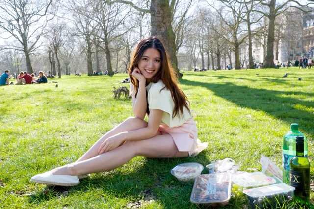喜欢被拍，也喜欢自拍，喜欢大笑，所以就和大家分享下吧。害羞，匿了。怎么笑才能好看除了考虑效果要自然以外，还要考虑笑出来怎样才能显得脸型好看，比如笑肌不能太用力拉，比如要集中意念在下巴，显得下巴尖俏啦blahblah。觉得自己可以做照骗专家了，那就贡献一些平常拍照的小tips给大家咯。女生学习如何笑，那男生学习如何给女朋友找角度吧。
1. 自拍
女生一般自拍的笑容分两种，一种是抿嘴笑，一种是露齿笑。其中，脸颊多肉的女生抿嘴笑一定要记得嘴唇虽抿但记得上下牙打开，微微咬住下唇。如图：
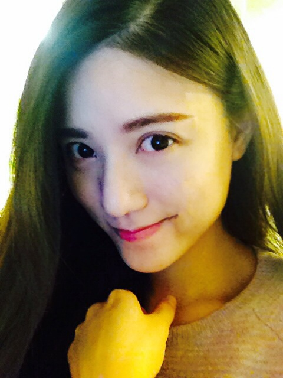
这样显得唇薄下巴尖有木有，还要微微侧脸四十五度。其实这个时候我已经体重56kg创历史新高了……放几个月前体重少十二斤时的我的大笑自拍图：
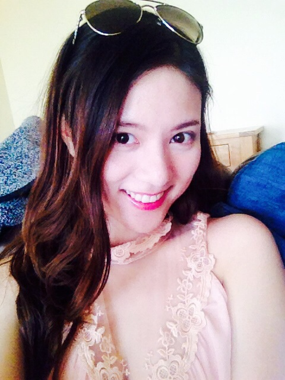
大笑容易表情狰狞，防止出现这个情况的诀窍就是笑肌放松，用嘴角和下巴的力量撑起笑容。
2. 摄影师篇
自拍练习如何笑之后，接下来检验笑容是否合格的就是别人的镜头了。专业的摄影师会抓取你的每一个瞬间，会让你放松，忘记镜头的存在，不要刻意摆拍。当你想好姿势后，千万不要摆好等着摄影师，而是心里想着你要的效果，瞬间摆好造型停留一秒，这样自然又不僵硬。贡献几个摄影师镜头下的我。
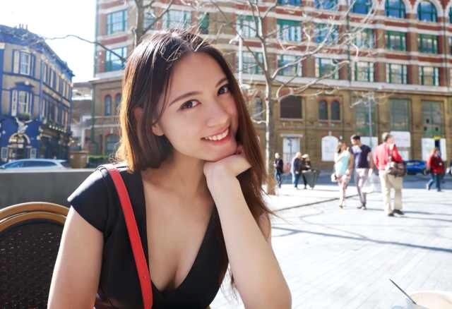
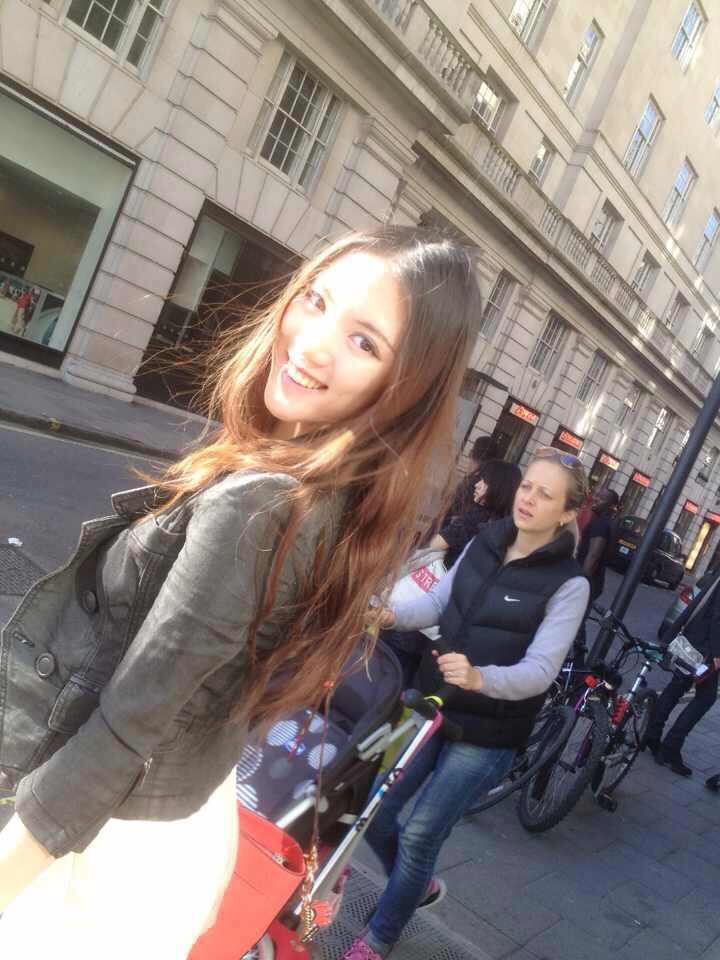
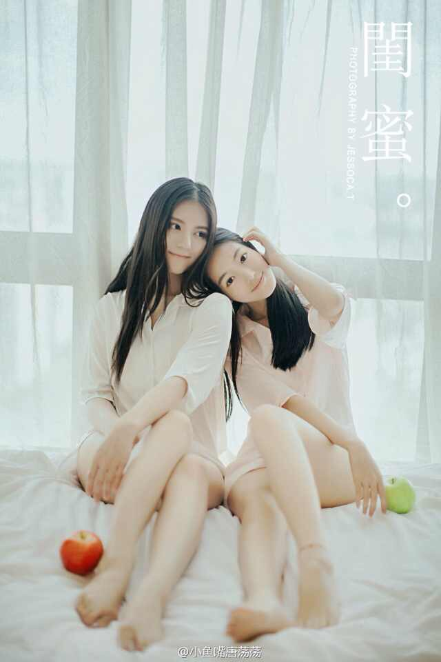
第一张摄于伦敦，摄影师微博搜“勇智毅”。当时的场景是我坐在街边的咖啡馆，招牌傻笑后一偏头的抓拍。第二张也是于伦敦街头，摄影师
@刘耕华，他现在回国了，国内的小伙伴也可以约片哟。这张不是正式拍摄，只是当时我一回头他用手机抓拍的。这种回头傻笑的姿势可以治疗肢体僵硬手脚不知放置何处的尴尬。第三张摄于海口，摄影师小鱼嘴唐荡荡。温馨的闺蜜风格，就是在聊天中嘻嘻哈哈的环境下完成的。
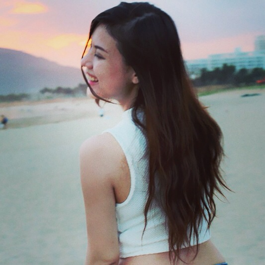这张照片就是在海边玩的时候我大笑甩头那一瞬间的抓拍。
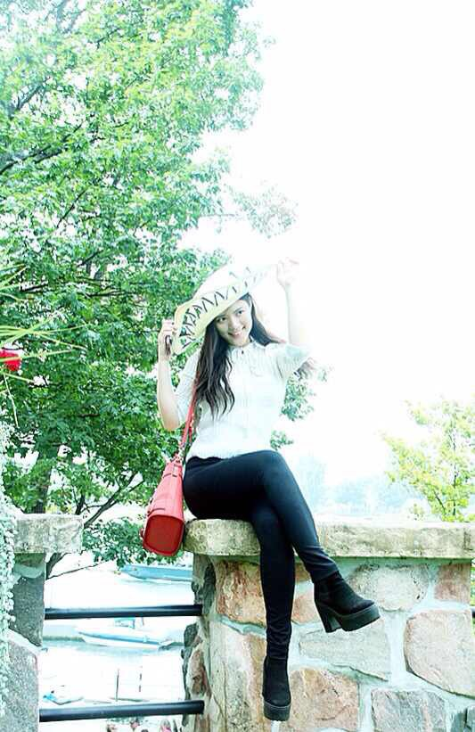买了一顶帽子忍不住一边嬉笑一边得瑟，又被拍了下来。
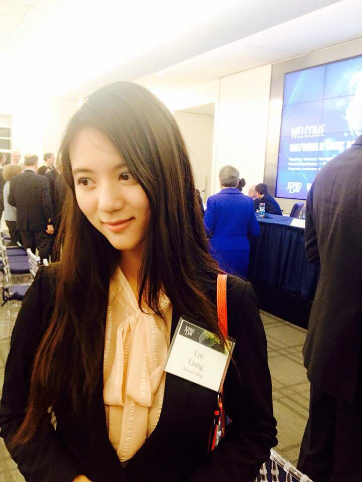
参加event，在听别人说话中的抓拍……
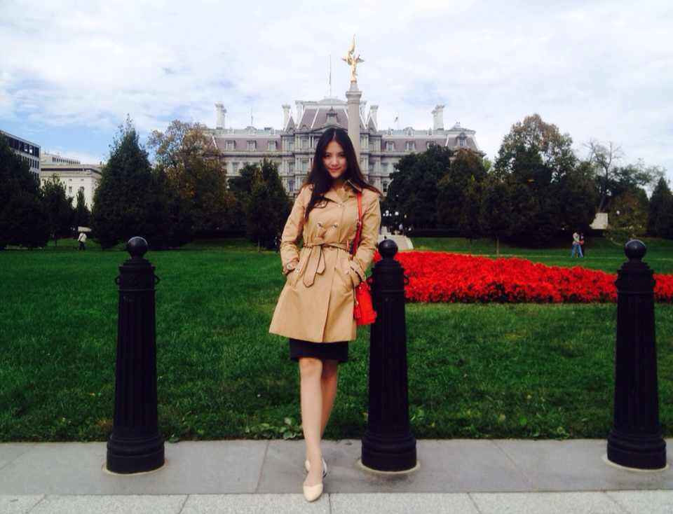
综上所述，好照片，看技术，大多数还都是抓拍出来的。照片不好看不是我们的错！是摄影师不！会！抓！拍！对不对！！！
我们都不是模特，没办法做到假笑都自然，那就让最亲近最了解我们的人在旁记录下我们最开心的时刻。每个女孩都很美，不美都是摄影师的错lol
最后补一张小时候爸爸镜头里的妈妈和我吧，我妈和我都喜欢会拍照的男人呀
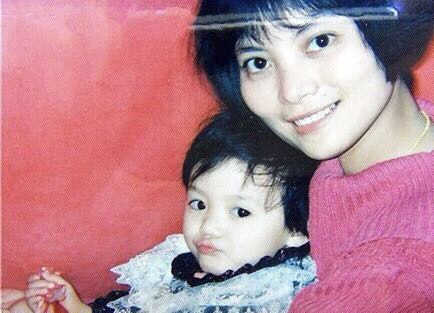